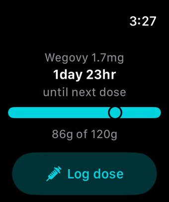
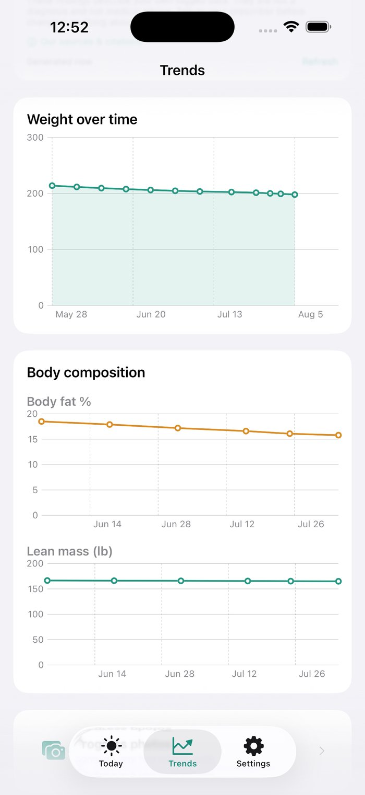
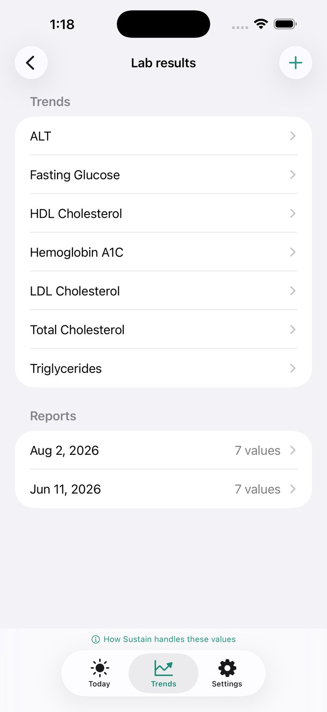

The companion app for Ozempic, Wegovy, Zepbound, Mounjaro and more, built around the #1 concern GLP-1 communities talk about, and the one thing most trackers ignore.
Your next dose, today's protein progress, and your weight trend all live on one screen, with quick links to snap a photo or ask a question, so you're not digging through tabs just to check in on your own day.
Point your camera at a meal and Sustain's AI breaks it down item by item, estimating grams of protein in seconds. It's built specifically for the #1 anxiety GLP-1 users share: losing muscle along with the fat.
Ask about your dose timing, protein trends, or side-effect patterns and get an answer grounded in what you've actually logged. It never diagnoses, never evaluates a lab value, and never suggests a dose.
Instead of restating a number you already saw on the chart above it, Sustain's weekly recap connects the dots: how your protein intake relates to how fast you're losing weight, and whether your habits are the kind that carry you through a plateau.
An estimate from your logged doses and your medication's published half-life, shown alongside your weight trend, with a projection of where it's headed if your next dose lands on schedule. Never a reason to change your schedule.
Log nausea, fatigue, or anything else you notice, and Sustain builds a pattern report you can actually bring to your next appointment, not just a screenshot of a symptom diary.
Hitting your goal weight isn't the finish line, it's a new phase. Sustain's Maintenance Program helps you navigate the "what now" moment with a real range to aim for and questions worth asking your prescriber.
Fast weight loss on too little protein is a real risk, and Sustain is the first tracker built around catching it, not just logging the scale.
Injection or oral, weekly or daily: log doses, rotate injection sites, and plan your next titration step ahead of time.
Snap a photo of your plate, and Sustain's AI estimates grams of protein instantly, no manual food-logging grind.
Not a restated stat: three real findings each week connecting your protein, adherence, and weight trend, in plain language.
Sign in with Apple or Google and your data syncs securely to your own account, so switching phones never means starting over.
A Lock Screen widget and Live Activity keep your next dose countdown and today's protein progress visible without opening the app.
Reaching your goal weight isn't the end. Sustain's Maintenance Program helps you navigate phase two, on your terms.

A Watch complication shows your next-dose countdown and protein progress right on your watch face, and you can log a dose in one tap. Sustain+.

If you use a compatible smart scale, import body fat percentage and lean mass through HealthKit and watch both trend over time. Sustain+.

Snap a photo of a lab result and Sustain transcribes the values for you to review and save. No interpretation added, that part stays with your prescriber.
7, 14, 30, 60, 100, 180, and 365-day streaks each get their own badge and a moment to mark the win.
Not on a common GLP-1? Add your own medication and half-life, and your reminders and charts build around it.
Logging a symptom you've noted before is now a one-tap check-in instead of resetting a slider from scratch.
Dictate a protein note, a side effect, or a question for Ask Sustain instead of typing it out.
An optional reminder a few days before your next dose is due, so a pharmacy run doesn't sneak up on you.
Save progress photos privately on your device, then generate a shareable before-and-after whenever you want one. Sustain+.
A quick look at your last four injection sites, oldest to newest, right under the site diagram.
Settings and onboarding are available in Spanish, with more of the app on the way.
Dose, weight, and protein logging never require a subscription. Sustain+ unlocks the AI features and your full history.